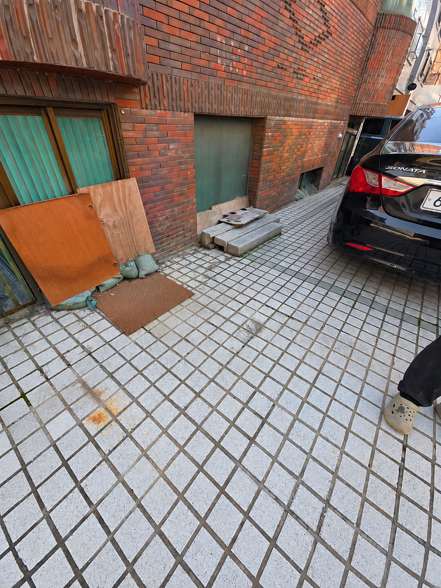
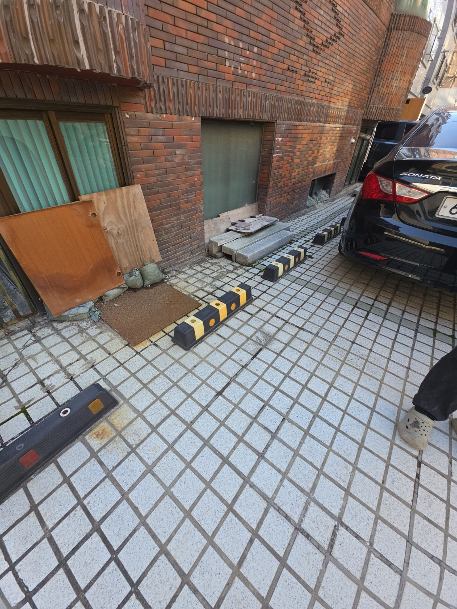

구리시 볼라드 교체 업체 · 주차 안전바 1개 부분보수 전후
구리시 볼라드 교체 및 구리시 볼라드 설치 현장에서는 멀쩡한 기둥 전체를 철거하지 않고 차량 충격으로 기울거나 부러진 1개만 부분 교체하여 비용 단가를 낮춥니다. 아스콘·콘크리트 바닥 강도에 맞춰 기존 파손 앙카를 정리한 뒤 흔들림 없이 재고정합니다.
 시공 전 · 파손/이탈
시공 전 · 파손/이탈
 시공 후 · 정밀 교체 완료
시공 후 · 정밀 교체 완료
구리시 전지역 및 반경 5~10km 이내 인접 동네에서 파손된 볼라드, 주차 안전바, 카스토퍼(주차 스토퍼), 주차금지봉 1개만 정밀 부분 교체·설치합니다. 현장 사진 2장으로 출장비 포함 확정 비용·단가를 바로 안내해 드립니다.
구리시 볼라드 교체 및 구리시 볼라드 설치 현장에서는 멀쩡한 기둥 전체를 철거하지 않고 차량 충격으로 기울거나 부러진 1개만 부분 교체하여 비용 단가를 낮춥니다. 아스콘·콘크리트 바닥 강도에 맞춰 기존 파손 앙카를 정리한 뒤 흔들림 없이 재고정합니다.
시공 전 · 파손/이탈
시공 후 · 정밀 교체 완료
볼라드와 함께 문의가 많은 카스토퍼(주차 스토퍼·주차 블럭·차량 방지턱) 교체 설치도 구리시 전지역과 인접 다산동·지금동·도농동에서 동일 출장으로 시공합니다. 깨진 고무·폴리우레탄 카스토퍼 철거 및 에폭시·콘크리트 전용 앙카 재고정까지 한 번에 처리합니다.

시공 전 · 깨짐/앙카 이탈
시공 후 · 신품 교체 완료불필요한 전체 교체 없이 파손된 수량만큼만 산정하여 거품 없는 시공 단가로 안내해 드립니다.
| 시공 구분 | 작업 내용 및 단가 결정 요소 | 비고 |
|---|---|---|
| 볼라드 1개 부분 교체 | 기존 파손 기둥·돌출 앙카 철거 + 신품 스텐/우레탄 볼라드 설치 | 바닥(콘크리트/아스콘)별 단가 상이 |
| 볼라드 앙카 빠짐 재고정 | 기둥 재사용 가능 시 기존 홀 정리 후 케미컬 앙카·매립 보강 | 자재비 절감 가능 |
| 주차 안전바·주차금지봉 설치 | U자형 안전바, 차선규제봉, 매립이동식 볼라드 신규·교체 시공 | 규격·수량별 단가 할인 |
| 카스토퍼·주차 스토퍼 교체 | 파손 주차 블럭·차량 방지턱 철거 및 전용 앙카 고정 | 볼라드와 동시 시공 가능 |
구리시 전 동(洞)과 5~10km 생활권인 남양주 다산·퇴계원, 서울 중랑·광진·강동, 하남 미사까지 당일·예약 출장이 가능합니다.